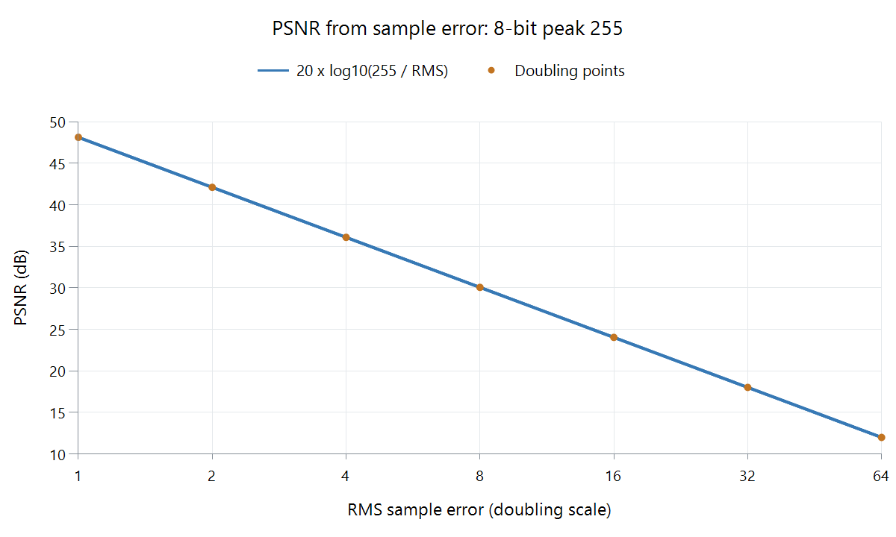

Peak Signal-to-Noise Ratio (PSNR) for Video
Peak signal-to-noise ratio (PSNR) compares decoded samples against a reference. It measures numerical error on a logarithmic scale, usually in decibels. With the same sample format and peak convention, a higher value means smaller mean squared error.
For one 8-bit plane using a peak sample value of 255:
PSNR = 10 × log10(255² / MSE)
MSE is the mean of the squared sample differences. Its square root is the root mean square, or RMS, error.

Calculated curve for one 8-bit plane, peak 255, and positive RMS error. It is not an encoder test or a scale of guaranteed visible quality.
| RMS sample error | PSNR in this example |
|---|---|
| 1 | 48.13 dB |
| 2 | 42.11 dB |
| 4 | 36.09 dB |
| 8 | 30.07 dB |
Doubling RMS error reduces PSNR by approximately 6.02 dB. With zero error, the mathematical result is infinite. That means the compared samples match exactly, not that the file's bytes, metadata, or source history are identical.
Error is not the same as visibility
Two pictures can have equal MSE and visibly different defects. PSNR gives a useful reconstruction measurement, but does not model all the ways people notice blur, grain changes, edges, or local artifacts.
Keep geometry, corresponding frames, sample format, and the peak definition consistent. An offset of one picture or a different range conversion can dominate the result. Values reported for different planes or bit depths need their measurement conventions stated.
For an Emby conversion, compare the delivered pictures with the retained source under the same preparation. PSNR can show how much additional numerical change occurred; it cannot tell whether the source already lost camera detail. Inspect the pictures too, and distinguish a PSNR calculated from pooled MSE from an arithmetic average of per-frame decibel values.
See Also
- Structural Similarity (SSIM) for Video
- VMAF Video Quality Metric
- Video Quantization Parameter (QP)
- Video Generation Loss